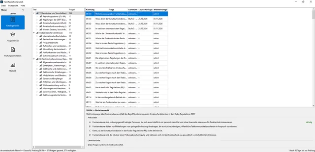
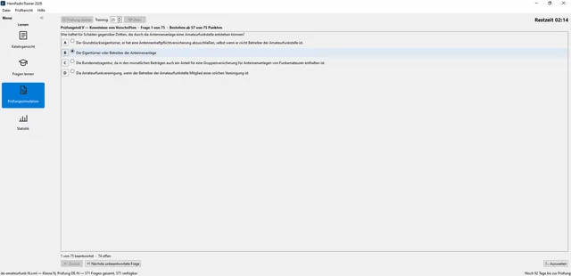
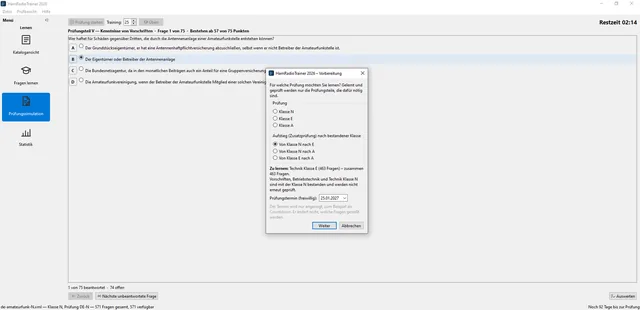
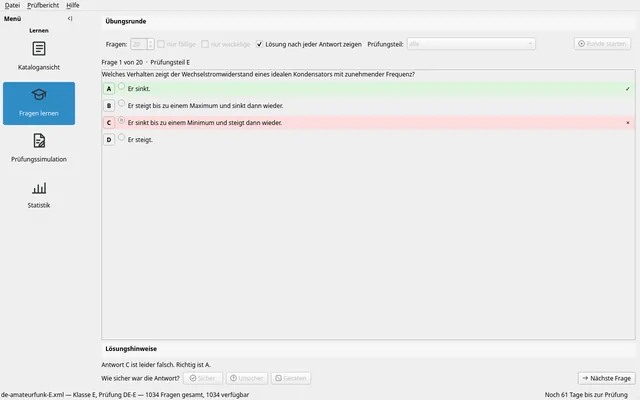
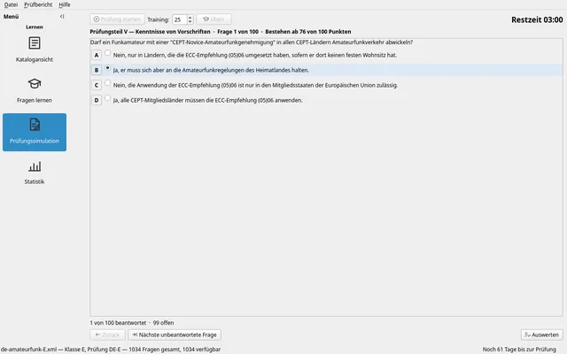
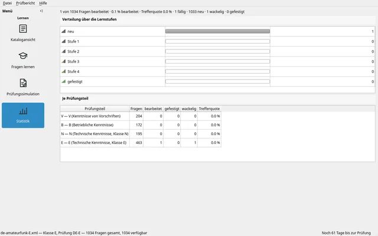
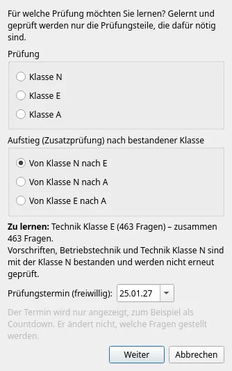

Gut vorbereitet zur Amateurfunkprüfung
HamRadioTrainer 2026 ist ein freier Lern- und Prüfungstrainer für die Klassen N, E und A – mit dem offiziellen Fragenkatalog der Bundesnetzagentur, einer wissenschaftlich validierten Lernmethode und einer Prüfungssimulation nach den aktuellen Regeln.
- Linux
- Windows 10/11
- Android
- Quelloffen · GPLv3
- Kostenlos · ohne Werbung
Was das Programm kann
Lernen, wiederholen, Prüfung üben – auf dem Rechner zu Hause und unterwegs auf dem Handy, mit derselben Lernlogik. Ohne Konto, ohne Internetverbindung, ohne Werbung.
Nur lernen, was geprüft wird
Beim ersten Start wählen Sie Ihre Prüfung: Klasse N, E oder A – oder einen Aufstieg von N nach E, N nach A oder E nach A. Gelernt und geprüft werden genau die Prüfungsteile, die die Verfügung dafür vorsieht.
Lernstufen mit Selbsteinschätzung
Jede Frage wandert durch Lernstufen. Wer sicher richtig antwortet, sieht die Frage seltener wieder – wer geraten hat, bald erneut. So landet die Lernzeit dort, wo sie gebraucht wird.
Prüfungssimulation
Ein Bogen wie bei der Bundesnetzagentur: 25 Fragen je Prüfungsteil, gleichmäßig zufällig gezogen, mit Zeitlimit und Auswertung je Teil – bestanden ab 19 von 25 Punkten.
Statistik
Wie viele Fragen sind neu, wackelig oder gefestigt? Wie hoch ist die Trefferquote je Prüfungsteil? Ein Blick genügt, um zu sehen, wo es noch hakt.
Katalog zum Nachschlagen
Alle Fragen nach Prüfungsteil und Abschnitt geordnet, mit Abbildungen, richtiger Antwort und Ihrem Lernstand zu jeder einzelnen Frage.
Ihre Daten bleiben bei Ihnen
Der Lernfortschritt liegt als Datei auf Ihrem Gerät. Es gibt keine Anmeldung, keine Cloud und keine Datenübertragung. Ändert sich der Fragenkatalog, bleibt der Fortschritt zu unveränderten Fragen erhalten.
So funktioniert das Lernen
Die Lernmethode folgt dem Karteikasten-Prinzip nach Leitner und dem Vorbild des HamRadioTrainers von 2015: Entscheidend ist nicht nur, ob eine Antwort stimmt, sondern auch, wie sicher Sie sich dabei waren.
Antwort wählen
Tippen oder klicken Sie die Antwort anSicherheit einschätzen
Waren Sie sicher, unsicher oder haben Sie geraten? Erst diese Einschätzung gibt die Antwort ab – bevor Sie wissen, ob sie richtig lagen.Auflösung
Dann zeigt das Programm die richtige Antwort und ob Ihre Antwort stimmte. Wer lieber ohne Rückmeldung übt, schaltet die Auflösung der Frage ab und sieht das Ergebnis am Ende der Runde.
Was die Einschätzung bewirkt
| Antwort | Lernstufe | Wieder dran |
|---|---|---|
| sicher und richtig | drei Stufen höher | deutlich später |
| unsicher und richtig | eine Stufe höher | bald |
| geraten und richtig | bleibt stehen | am nächsten Tag |
| falsch | zwei Stufen zurück | früher wieder |
Ein geratener Treffer zählt in der Trefferquote, gilt aber nicht als Wissen. In einer Prüfungssimulation gibt es keine Selbsteinschätzung; richtige Antworten steigen dort eine Stufe.
Sechs Lernstufen
Abstand bis zur nächsten Wiederholung je Stufe.
Welche Frage als Nächstes kommt
Zuerst die Fragen, die Sie noch nie gesehen haben – so kommt der ganze Katalog einmal dran. Danach wackelige und fällige Fragen, gefestigte rücken nach hinten. Fragen gleicher Dringlichkeit werden bei jeder Runde neu gemischt, ebenso die Prüfungsteile und die Reihenfolge der Antworten.
Mit „nur fällige“ oder „nur wackelige“ lässt sich eine Runde gezielt auf Wiederholungen beschränken.
Prüfungssimulation wie bei der BNetzA
Die Simulation stellt den Bogen so zusammen, wie ihn die Bundesnetzagentur aktuell prüft: 25 Fragen je Prüfungsteil, ein Punkt je richtiger Antwort, bestanden ab 19 Punkten in jedem Teil.
| Prüfung | Prüfungsteile | Fragen · Zeit |
|---|---|---|
| Klasse N | Vorschriften, Betriebstechnik, Technik N | 75 · 135 min |
| Klasse E | dazu Technik E | 100 · 180 min |
| Klasse A | dazu Technik E und A | 125 · 240 min |
| Aufstieg N → E | Technik E | 25 · 45 min |
| Aufstieg N → A | Technik E und A | 50 · 105 min |
| Aufstieg E → A | Technik A | 25 · 60 min |
Die Fragen werden je Teil gleichmäßig zufällig aus dem Katalog gezogen – wie in der echten Prüfung. Ihr Lernstand beeinflusst die Auswahl nicht; die Simulation zeigt also ehrlich, wie es am Prüfungstag aussähe.
Unbeantwortete Fragen zählen als falsch. Die Auswertung nennt das Ergebnis je Prüfungsteil und sagt, ob eine mündliche Nachprüfung in Frage kommt: Das ist nach Abschnitt 7.3 der Verfügung nur der Fall, wenn genau ein Teil verfehlt wurde und dort mindestens 17 Punkte erreicht sind.
Alle Antworten der Simulation fließen in Ihren Lernfortschritt ein.
Bildschirmfotos
Am Rechner ein Fenster mit Ansichtsleiste, auf dem Handy eine eigene Oberfläche mit großen Flächen zum Antippen – beide mit demselben Kern.

















Download
Fertige Pakete stehen auf der Release-Seite bei GitHub bereit. Das Programm bringt die Fragenkataloge mit und braucht keine Internetverbindung.
Windows
- Windows 10 und 11, 64 Bit
- Installer (
.exe) - oder ZIP zum Entpacken, ohne Installation
Linux
- Pakete für Debian/Ubuntu (
.deb) und Fedora (.rpm) - Arch:
PKGBUILDim Quellcode - X11 und Wayland
Android
- ab Android 9
- APK zur direkten Installation
- „Apps aus unbekannten Quellen“ erlauben
Fehler gefunden oder eine Idee? Meldungen sind auf GitHub unter Issues willkommen.
Hintergrund
Das Vorbild von 2015
Viele Funkamateure haben mit dem HamRadioTrainer von DM1OLI gelernt. Das Programm wird nicht mehr weiterentwickelt, seine Fragenkataloge lagen in einem verschlüsselten Format vor und konnten nicht bearbeitet werden. Mittlerweile sind sie inhaltlich veraltet. Auch die Klasse N gab es damals noch gar nicht.
HamRadioTrainer 2026 greift die Ideen auf, die das HamRadioTrainer 4.0 ausgemacht haben: die Lernstufen mit Selbsteinschätzung, die Prüfungssimulation und die Beeinflussung des Lernens durch einen definierbaren Prüfungstermin. HRT 2026 ist eine vollständige Neuentwicklung: Als Vorbild diente allein, wie sich das Programm bedienen ließ.
Frei und quelloffen
HamRadioTrainer 2026 steht unter der GNU General Public License, Version 3 oder später. Sie dürfen das Programm frei nutzen, weitergeben, untersuchen und verändern; Weiterentwicklungen bleiben ebenso frei.
Die Fragenkataloge liegen als offenes XML vor. Jeder Texteditor genügt, um sie zu lesen oder zu ergänzen, und Änderungen sind nachvollziehbar.
Neu aufgebaut von Jan – DC6DX.
Der Fragenkatalog
Grundlage sind die offiziellen „Prüfungsfragen zum Erwerb von Amateurfunkprüfungsbescheinigungen“ der Bundesnetzagentur in der 3. Auflage vom März 2024. Verwendet wird die elektronische, maschinenlesbare Fassung, die die Bundesnetzagentur selbst zur Verfügung stellt.
Quellenvermerk
Fragenbasis: Prüfungsfragen zum Erwerb von Amateurfunkprüfungsbescheinigungen, Bundesnetzagentur, 3. Auflage, März 2024 (www.bundesnetzagentur.de/amateurfunk)
Herausgeber: Bundesnetzagentur für Elektrizität, Gas, Telekommunikation, Post und Eisenbahnen, Tulpenfeld 4, 53113 Bonn
Lizenz: Datenlizenz Deutschland – Namensnennung – Version 2.0 (DL-DE-BY-2.0)
Was geändert wurde
Fragetexte, Antworttexte und Abbildungen sind unverändert übernommen und für das Programm in ein XML-Format übertragen. Zwei Punkte weichen von der Quelle ab:
- In der Quelle ist bei jeder Frage die erste Antwort die richtige. Da Prüfungsbögen die Antworten mischen, wurde die Position der richtigen Antwort gleichmäßig auf alle vier Plätze verteilt.
- Die in der Quelle fehlerhaft angegebene Lizenzkennung „DL-DE->BY-2.0“ wurde auf die veröffentlichte Kennung DL-DE-BY-2.0 berichtigt.
HamRadioTrainer 2026 ist ein privates, nicht kommerzielles Projekt und kein Angebot der Bundesnetzagentur. Maßgeblich für die Prüfung sind allein die Veröffentlichungen der Bundesnetzagentur.